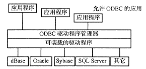
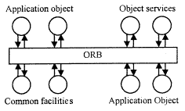

中间件技术概述
简单的说，中间件就是在任何一个两层结构中间加入的一层独立实体。
根据中间件发挥的作用、采用的实现技术的不同，可以将其划分为以下几种：
数据库中间件是所有中间件中最普遍、最成熟的一种。数据库中间件支持应用程序和本地或异地的同构或异构数据源进行通信。它通常提供一系列编程接口，屏蔽不同网络协议、操作系统和数据库平台的差异，允许应用程序一致地访问数据源。
ODBC 、 JDBC 都是数据库中间件的标准。采用 ODBC 的方法是通过驱动程序提供对数据库的独立性，驱动程序与具体的数据库有关，是一个用以支持 ODBC 函数调用的模块 ( 通常是一个 DLL) ，应用程序通过调用驱动程序所支持的函数来操作数据库，若想使应用程序操作不同类型的数据库，就要动态地链接到不同的驱动程序上。 ODBC 具有良好的数据库独立性，它可以避免应用程序对不同类型数据库使用不同的 API ，通过 ODBC 可以使得数据库的更改变得非常容易，因为对应用程序来说这只需改换一下驱动程序。 JDBC 定义了一个 Java 开发的 CLI 。 JDBC 实际上就是一系列用于特定数据库的 Java 类库，它源于 ODBC 体系结构。 ODBC 的结构图如下：

图 1 ODBC 结构图
在基于数据库的中间件模型中，数据库作为信息的中心存储单元，中间件负责数据间的同步及点到点通信。这种方式不适合于高性能应用处理，因为它需要大量的数据通信，同时，当网络发生故障时，系统将不能正常工作。
RPC 已经存在很长一段时间了，它沿用了用户熟悉的编程模式，从程序员的角度出发， RPC 十分容易理解――程序代码调用远端过程并将结果返回。当使用 RPC 时，只需要编写很少的网络程序代码，大部分代码由 IDL(Interface Define Language) 生成。
RPC 应用不仅可以调用在远方节点上的子程序，甚至可以在不同操作系统环境下运行。它使程序员不必考虑网络的细节，仍可采用自己熟悉的 Call/Return 语法。
RPC 一般采用 Call/Return 模式，多用于应用程序之间的通信，而且采用同步方式。 RPC 程序之间的同步通信一般采用 Request-Wait-Reply 方式， 因此，对小型简单的不需要采用异步通信方式的应用比较适合，但对大型复杂的应用不太适合，因为它需要程序员考虑网络或系统的故障、处理多个网络连接、可移植性、缓冲及流量控制和进程之间的同步等多种问题。
TP Monitor 是一种复杂的中间件产品，它为应用处理提供了一种通信机制，它允许开发者在 TP Monitor 环境中定义事务服务。 TP Monitor 位于客户机和数据库服务器之间，采用三层或多层模型。客户通过 Transaction RPC(TRPC) 机制在 TP Monitor 中调用事务， TP Monitor 运行事务来连接数据库，并将处理结果返回给客户端。 TP Monitor 提供一系列服务，如应用管理、管理控制和应用之间消息传递等。常见的属性包括全局事务协调、分布式两阶段提交、资源管理器支持、协调故障恢复、高可用性、安全性、网络负载平衡等。
在 TP Monitor 中，事务有一个明确的起止点，如果事务失败， TP Monitor 可以回滚事务，不会使系统处于不完整、不一致状态。 TP Monitor 同时可以复用数据库请求。因为每个客户调用事务，而不是直接和数据库进行连接，因此 TP Monitor 可以协调数据库请求，传统的 Connection-Per-Client 的限制 ( 在客户机 / 服务器环境中 ) 可以去掉，如 100 个客户可能只需要 10 个数据库连接。并且 TP Monitor 还可以在同一个事务中读写异构数据库中的信息，并保持异构数据库的完整性。常见的 TP 产品有： BEA 的 Tuxedo 、 IBM 的 CICS 、 NCR 的 TopEnd 、 Microsoft 的 MTS 等。
基于 ORB 的中间件主要是采用面向对象的技术， ORB 可以看作是与编程语言无关的面向对象的 RPC 应用。它的成员函数可以采用类似 Object-function() 方式调用远端的对象。目前， ORB 存在两个彼此竞争的标准： CORBA ORB 和 DCOM ORB 。
当使用 ORB 时， IDL(Interface Define Language) 用于定义对象之间的接口，它类似于 RPC 中的 IDL 定义过程的接口。 ORB 特别适用于对象接口变化不频繁，不会导致代码经常被重新编译及链接的情况。 ORB 的总体框架图如图 2 所示。

图 2 ORB 的总体框架图
理想的要求是，一个 ORB 应赋予每个对象 ( 与其它对象特别是远程的对象进行通信时 ) 以下的分布透明性：
位置：无论其它对象是否处于同一个计算机中；
访问路径：与其它对象交换消息经过的途径；
重定位：其它对象从一台计算机移至另一台；
数据表示：其它对象相应的数据格式；
通信机制：使用何种进程间的通信机制和规程；
调用机制：其它对象的方法是如何执行的。例如：进程、线程和动态链接库等的细节；
存储机制：其它对象任何可以或不可使用存储的情况；
机器类型：任何机器型号上的不同；
程序语言：其它对象是以何种语言实现的；
操作系统：任何操作系统上的不同；
安全机制：其它对象本身所具有的访问控制机制。
对以上各方面的任何变更都无须将这个特定对象重新编译 ( 或重新链接、重新加载等等 ) ，其整体效果是， 对任何一个对象的实现动态地进行更改，都将不会影响到其它的对象，无论它们是服务者还是请求者。
基于消息的中间件 MOM 提供了一个完整的处理环境，允许开发者及用户连接不同系统之间的数据和代码，或采用一致的界面进行应用处理的互连。 MOM 提供了一个高层应用接口，为不同系统提供操作核心。 MOM 产品的工作主要是通过将信息以消息的方式在程序间传递来完成。
MOM 一般可以分为两种形式：消息传递 (Message Passing) 和消息队列 (Message Queuing) 。
消息传递在建立大型的分布式应用中比较常见。其主要的模式是广播 / 订购 (Publish-Subscribe) 方式。采用该方式，应用程序既可以订购，也可以广播。该通信模型提供了位置透明性。程序只需要简单地将消息以主题方式发送出去，由中间件来负责将消息传递给所有订购该主题的程序。 MOM 主要通过 agents 技术来实现 Publish-Subscribe 方式应用。当程序广播消息时，首先与一个代理进行连接，将消息传递给代理。代理负责路由消息给相应的程序。由于代理可以实现消息的动态路由功能，因此，该方式能够提供较好的容错性能，但它缺乏 MOM 的异步特性，不太适合长时间网络断开的情况。
消息队列方式允许程序无需直接建立起连接即可发送和接收消息。程序只须简单地将消息发送给消息队列，由消息队列负责消息的传递，对应用程序完全透明。消息队列采用异步方式，为信息提供了一个安全的存储方式，特别适用于不是直接连接的应用，如移动用户、发送方或接收方进程可能处于不活动状态的应用。它的缺点是需要一些配置工作，性能不是很高，而且如果队列丢失，整个系统将受到影响。
MOM 可以克服基于 RPC 的中间件的限制，提供基于消息的异步通信机制，因此 MOM API 调用不会阻塞应用程序，同时 MOM 不会占用大量的网络带宽，可以跟踪事务，通过将事务存储在磁盘上，可以恢复系统及网络故障。常见的 MOM 产品有： DEC 的 MessageQ 、 IBM 的 MQSeries 、 Microsoft 的 MSMQ 。
X/Open Distributed Transaction Processing Model，包括四个部分：
该模型还定义了如下的接口：
X/Open DTP 模型的 TX 接口（ 9 个函数）
函数 |
功能 |
tx_open |
打开事务管理器和相关的资源管理器集合 |
tx_close |
关闭事务管理器和相关的资源管理器集合 |
tx_begin |
开始一个新的事务 |
tx_rollback |
回滚事务 |
tx_commit |
提交事务 |
tx_set_commit_return |
提交事务 |
tx_set_transaction_control |
在链式和非链式模式之间切换 |
tx_set_transaction_timeout |
设置事务超时的时间 |
tx_info |
返回事务状态，例如事务 ID 、事务状态等 |
X/Open DTP 模型用于事务管理器的 XA 接口（ 6 个函数）
函数 |
功能 |
xa_start |
指示资源管理器把随后由应用程序提出的请求给指定标识符确定的事务 |
xa_end |
结束资源管理器和事务的关联 |
xa_prepare |
资源管理器准备进行提交操作，由事务管理器在 2PC 的第一阶段提出 |
xa_commit |
提交事务性操作，由事务管理器在 2PC 的第二阶段提出 |
xa_recover |
检索 prepared 、启发式提交的或回滚的事务列表 |
xa_forget |
取消 (Forget) 与指定的事务标识符关联的启发式事务 |
X/Open DTP 模型用于事务管理器的 AX 接口（ 2 个函数）
函数 |
功能 |
ax_reg |
采用事务管理器动态的 enlist |
ax_unreg |
采用事务管理器动态的 delist |
X/Open DTP 模型在业界得到了广泛的支持， Tranarc 的 TXSeries/Encina 、 BEA Systems 的 TUXEDO 和 TopEnd 、 AT&T GIS 都支持 TX 接口。微软的 Transaction Server 虽然不支持 TX 接口，但是它可以与 XA 兼容的数据库，例如 Oracle 互操作。类似的，多数数据库产品 ( 如 Oracle 、 Sybase 、 Informix 和 Microsoft SQL Server) 和基于消息传递的中间件产品 ( 如 IBM 的 MQSeries 和微软的 MSMQ Server) 都实现了 XA 接口。
TUXEDO 最初是 AT&T 于 1984 年针对电信应用而发布的。 BEA 系统公司直接销售该产品。 1996 年 BEA 从 Novell 公司购买了 TUXEDO 的授权。 TUXEDO 的设计是基于 IMS 的，最初的目标是替代美国电信部门的 IMS 系统。 1997 年的版本是 TUXEDO 6.1 。它是一个可以移植的系统，可运行的操作系统多于 15 个，包括各种 UNIX 的变种和 NT 。 TUXEDO 是 X/Open DTP 标准的基础，包括 DTP 模型本身、 XA 、 TX 和 XATMI 。
TUXEDO的API称为Application to Transcation Manager Interface(ATMI)，是一些可以由C或者COBOL直接调用的运行服务的集合。他们支持通信、分布事务和系统管理。与15年前设计的CICS API接口不同，ATMI更加依赖于具体的操作系统和数据库系统。
参考文献：